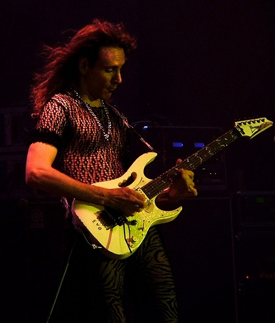
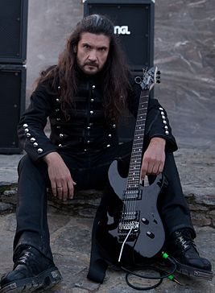
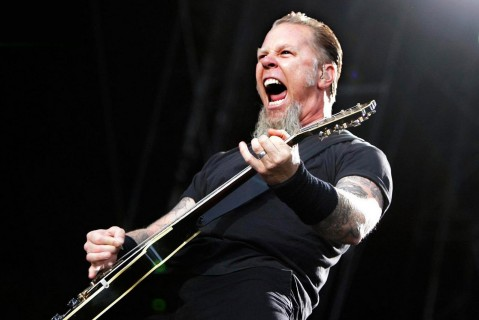

Известные гитаристы
Стив Вай
 Стив Вай — американский гитарист-виртуоз, также известен как композитор, вокалист, продюсер, актёр.
Начал свою карьеру в качестве гитариста и интерпретатора у Фрэнка Заппы, с которым записывался и гастролировал начиная с 1980 года. С 1983 года ведёт самостоятельную карьеру как солирующий гитарист.
В 1986 году Стив Вай дебютировал на большом экране. В фильме «Перекрёстки» (“Crossroads”) он сыграл демонического гитариста, который противостоит главному герою в финальной гитарной дуэли.
А в фильме «Чокнутый» (“Crazy”, 2007) он выступил в роли легендарного кантри-исполнителя Хэнка Уильямса.
Стив Вай спроектировал собственную гитару с семью струнами – Ibanez Universe. Хотя инструмент сначала не прижился, в середине – конце 90-х годов такие группы, как Korn и Limp Bizkit, стали использовать его, чтобы добиться супер-низкого звучания.
Вай продолжил работать с Ibanez и в прямом смысле вложил себя в модель JEM VAI2K DNA – ограниченное издание серии гитар JEM. В составе краски для этих гитар использовалась кровь музыканта. «Возможно сто лет спустя, когда кто-нибудь решит клонировать меня из клеток крови в краске, мой клон, наконец, узнает, как прорваться на радио», - иронизирует музыкант.
Один из лучших альбомов Вая – “Passion and Warfare” (1990) - расширил лексикон электрогитары и возвестил эру гитарных виртуозов начала 90-х. Интересно, что при записи этого альбома с Ваем последовательно расторгли контракт две компании звукозаписи, а сам музыкант был уверен, что продаст не больше десяти копий.
Грег Хоу
 Грегори «Грег» Хоу, правильнее Хау, — американский джаз-фьюжн, рок-гитарист, композитор, виртуоз, сессионный музыкант. Первый сольный альбом выпустил в 1988 году. Наиболее известен по своей работе в качестве сессионного гитариста для поп-музыкантов, среди которых Майкл Джексон, Энрике Иглесиас, ’N Sync, Джастин Тимберлейк.
Грегори «Грег» Хоу, правильнее Хау, — американский джаз-фьюжн, рок-гитарист, композитор, виртуоз, сессионный музыкант. Первый сольный альбом выпустил в 1988 году. Наиболее известен по своей работе в качестве сессионного гитариста для поп-музыкантов, среди которых Майкл Джексон, Энрике Иглесиас, ’N Sync, Джастин Тимберлейк.
Американский гитарист из Пенсильвании, ставший очередным открытием Майка Варни (Mike Varney) - шефа компании Shrapnel. Xoy вырос в музыкальной семье, на гитаре стал играть с 10 лет и в школе еще создал группу DUKE, благодаря которой на него и вышел Варни. В 1988 Варни пригласил чернокожего гитариста в студию, где и был записан его дебютный альбом. В качестве ритм-секции Варни приставил к Грегу двух суперпрофессиональных музыкантов: басиста Билли Шиэна (Billy Sheehan, ex-TALAS) и ударника Атма Анур (Atma Anur, CACOPHONY). В мире инструменталистов диск произвел впечатление, но у слушателя успеха не имел. Варни решил сменить стратегию и срочно организовал группу HOWE II из Грега, его брата, вокалиста Эла Xoy (Al Howe, ex-DUKE), басиста Верна Парсонса (Vern Parsons) и ударника Джо Неволо (Joe Nevolo, ех-GOOD RATS, MAHOGANY RUSH, CHINA SKY, PHANTOM'S OPERA). Группа записала два весьма неплохих альбома (''High Gear'' и ''Now Hear This''), выпуск которых сопровождался массовой рекламой, но добиться реального успеха так и не смогла. В 1991 году она распалась.
Хоу вернулся к инструментальной карьере, а Неволо работал с PAT TRAVERS и SHADOW GALLERY, Парсонс стал преподавать игру на бас-гитаре. Хоу стал выпускать альбомы под маркой Shrapnel, в основном обходясь при записи альбомов собственными силами. Параллельно с этим он сделал блистательную карьеру в качестве сессионного музыканта. В 1996 году во время своего турне его услугами воспользовался Майкл Джексон (MICHAEL JACKSON), когда его гитаристка Дженнифер Баттен (Jennifer Batten) выбыла из строя. После этого Хоу незамедлительно перекочевал в сопровождающий состав Энрике Иглесиаса (ENRIQUE IGLESIAS), а в 2001 году его пригласили поработать на живых концертах поп-группы N'SYNC.
В 2001 году Хоу приступил к работе над своим очередным сольным альбомом, в записи которого ему помогают легендарные музыканты: басист Виктор Вутен (Victor Wooten) и ударник Деннис Чамберс (Dennis Chambers).
Является примером для многих современных гитаристов. Известен своей особенной манерой игры, где использует слайды-вибратто.
Виктор Смольский
Ви́ктор Дми́триевич Смо́льский — советский и белорусский музыкант, мультиинструменталист, композитор, продюсер. Гитарист метал-групп RAGE, ALMANAC, MIND ODYSSEY и LINGUA MORTIS ORCHESTRA. Педагог, автор программы гитарного обучения — DVD «Школа метала». Член жюри международных музыкальных конкурсов.
В 14 лет Виктор оказался в молодежной студии «Песняров», которая гастролировала наравне с основным составом. В студии «Песняров» больше фанатели от джаза, а Виктор играл пожестче. Тогда Мулявин посоветовал: «Ты роковый парень, вот и собери команду». И до сих пор гитарист с мировым именем считает песняра учителем № 1 в своей рок-жизни: «Никогда не встречал людей, которые так помогали музыкантам. Страшно добрый и правильный человек».Смольский говорит, что помогла его успеху еще и волна постперестроечного интереса, когда все смотрели в нашу сторону. А еще его мультиинструментализм: после одиннадцатилетки он играл на гитаре и басу, быстро аранжировал на клавишах.
Виктор Смольский: "У современных музыкантов есть общая ошибка – они ещё до того, как начать запись, думают, что сделать, чтобы песню хорошо продать. Об упаковке нужно думать в последнюю очередь, когда есть хороший товар. Думать о том, как преподнести свою музыку – это последняя стадия, а первая – найти свой стиль и сочинять действительно что-то интересное. И многие музыканты теряются и даже не пытаются найти свой стиль, а стараются подстроиться под актуальный успех кого-либо. Это ломает многих, они теряются. Очень зря."
Джеймс Хетфилд
Дже́ймс А́лан Хэтфилд — американский рок-музыкант, вокалист и гитарист метал-группы Metallica. C 2011 года занимает 87-е место в списке величайших гитаристов всех времён по версии журнала Rolling Stone.
Один из самых известных ритм-гитаристов планеты.